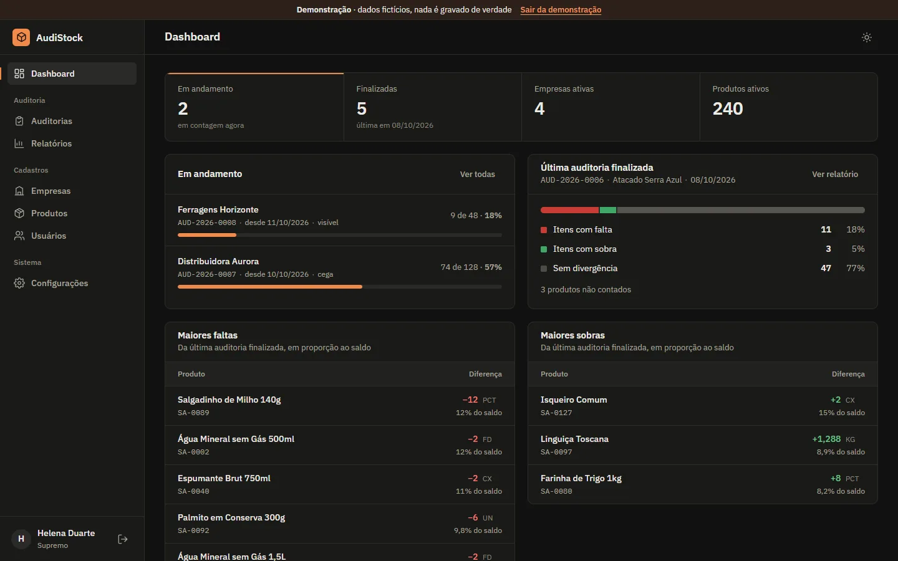
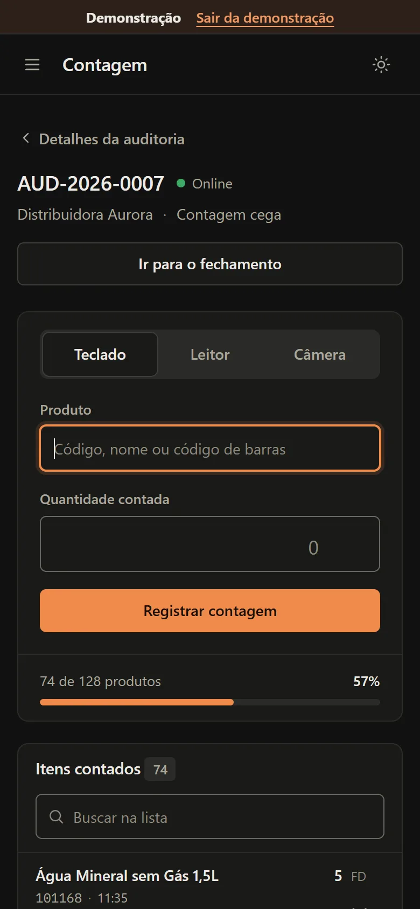

AudiStock
Recuento de inventario desde el teléfono, comparado con el ERP.


En esta página: 01Por qué existe
Por qué existe
El equipo que auditaba el inventario de algunas empresas del grupo señalaba muchos problemas con el recuento de inventario de AutoSystem. Hice AudiStock de forma parecida a AutoSystem y resolví los problemas de los que se quejaban los operadores. Por ahora, las existencias de AutoSystem se introducen en el cierre; la integración directa queda para una etapa posterior.
Problema, sistema y comprobación
Problema
El recuento de inventario generaba quejas de quienes auditaban.
Sistema
Auditoría de inventario: el equipo cuenta desde el teléfono, en el cierre registra las existencias del ERP y recibe el informe de faltantes y sobrantes en PDF, Excel y CSV, con cola sin conexión para contar sin internet.
Comprobación
130 pruebas
84 de unidad y base de datos y 46 de extremo a extremo, en GitHub Actions. Verificadas el 9/11/2026.
Por dentro
-
Auditorías en curso
El progreso de cada recuento, el resumen de la última auditoría y los mayores faltantes y sobrantes en proporción a las existencias.
-
Recuento desde el teléfono
Teclado, lector de código de barras o cámara, con cola sin conexión para contar sin internet.
-
Faltantes y sobrantes frente al ERP
En el cierre, el equipo registra las existencias del ERP. El informe muestra, por artículo, las existencias del sistema, lo contado y la diferencia, y sale en PDF, Excel y CSV.
Cómo se construyó
Arquitectura
AudiStock es HTML, CSS y JavaScript en módulos ES, sin framework y sin paso de build, publicado como sitio estático. Los datos y el inicio de sesión están en Supabase, y lo que cambia una cantidad (registrar, corregir, finalizar y eliminar) son funciones de Postgres. El recuento que no logra subirse espera en una cola en el IndexedDB del dispositivo. En la demostración, js/demo.js ocupa el lugar del cliente de Supabase y lo guarda todo solo en la pestaña.
Ver en el código: README.pt-BR.md L181–190 supabaseClient.js L1–40 offline.js L1–24 schema.sql L324–392
- Lectura en el teléfono
- Cola en IndexedDB
- Función en Postgres
- Cierre con existencias ERP
- Informe de diferencias
Decisiones técnicas
El recuento se suma dentro de la base
Toda lectura pasa por la función
registrar_contagem, que bloquea la fila del artículo (for update) y suma en una sola transacción. El README deja constancia de que, antes de ella, 20 lecturas simultáneas del mismo producto quedaban en 2; una prueba lanza 20 a la vez en la base de la demostración y comprueba 20. El cierre también es una sola función:finalizar_auditoriagraba todas las existencias y cierra a la vez, y se niega si algún artículo se contó o recontó después de abrir la pantalla.Ver en el código: schema.sql L324–392 schema.sql L428–488 README.pt-BR.md L209–224 contagem.test.mjs L24–31
Permisos comprobados en la base
Separé cuatro perfiles (administrador general, administrador, auditor y visualizador) y escribí las reglas en 24 políticas de RLS, por perfil y por empresa. Los triggers impiden que alguien se ascienda a sí mismo o altere un recuento ya finalizado. El alta de personas pasa solo por una Edge Function con la clave de servicio, que nunca llega al navegador.
permissoes.sqlentra como cada perfil y comprueba 54 reglas.Ver en el código: schema.sql L706–818 schema.sql L513–548 schema.sql L638–673 index.ts L1–30 permissoes.sql README.pt-BR.md L142–152
Política de seguridad por hash, sin build
Cada página trae una Content Security Policy en una meta tag: solo se ejecutan scripts del propio sitio, de las carpetas exactas de las bibliotecas en cdnjs y jsDelivr, con versión fija, y de los scripts incrustados permitidos por su hash. Las bibliotecas de PDF y de hojas de cálculo solo se descargan al exportar o importar, comprobadas por SRI.
csp.test.mjsrevisa todas las páginas, y las pruebas de extremo a extremo fallan si la política bloquea algo.Ver en el código: contagem.html L5 README.pt-BR.md L193–204 csp.test.mjs supabaseClient.js L12–27
Desafío
Cola sin conexión sin recuentos dobles
Una respuesta perdida en la red, o la misma cola abierta en dos pestañas, podía sumar la misma lectura dos veces. Cada registro lleva un id_cliente generado en el dispositivo, el mismo del intento que falló, y la base anota en contagens_aplicadas lo que ya aplicó. Solo una pestaña envía a la vez (Web Locks). Un fallo pasajero, como la red o una sesión vencida, retiene la cola en orden; cualquier otro rechazo pasa a «No enviada» sin bloquear las siguientes.
Ver en el código: offline.js L1–24 offline.js L76–100 offline.js L168–207 contagem.js L495–527 schema.sql L110–117 fila.test.mjs
Pruebas
Son 84 pruebas de unidad y de base de datos con node:test: el código real de js/ se ejecuta en Node sobre la base de la demostración, la cola usa un IndexedDB en memoria, y schema.sql y permissoes.sql se ejecutan en un Postgres en WebAssembly (PGlite), incluso sobre una base de la versión anterior. Playwright hace 46 ejecuciones de extremo a extremo, en pantalla de computadora y de celular. GitHub Actions lo ejecuta todo en cada push a main y en cada pull request.
Ver en el código: package.json indexeddb.mjs L1–7 esquema.test.mjs L1–40 playwright.config.mjs L27–30 e2e testes.yml
Stack y enlaces
Stack
JavaScript, Supabase (PostgreSQL + Auth), IndexedDB, PWA, jsPDF, ExcelJS, SheetJS, BarcodeDetector, node:test, PGlite, Playwright, GitHub Actions